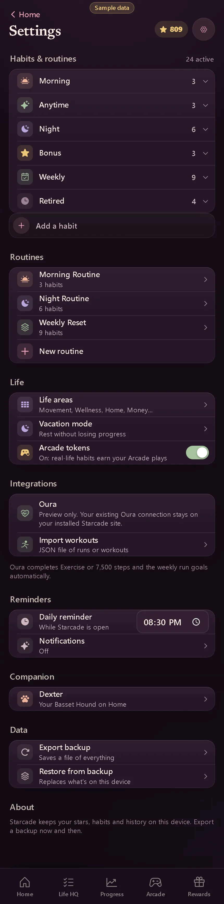

Settings
- Area
- Settings
- Screen 60 of 65
- settings
- Capture
- full scrolling page (430×1732), demo time 15:00, sample data
- Image
- img/60-settings.webp

Text on this screen
Settings Habits & routines 24 active Morning 3 Anytime 3 Night 6 Bonus 3 Weekly 9 Retired 4 Add a habit Routines Morning Routine 3 habits Night Routine 6 habits Weekly Reset 9 habits New routine Life Life areas Movement, Wellness, Home, Money… Vacation mode Rest without losing progress Arcade tokens On: real-life habits earn your Arcade plays Integrations Oura Preview only. Your existing Oura connection stays on your installed Starcade site. Import workouts JSON file of runs or workouts Oura completes Exercise or 7,500 steps and the weekly run goals automatically. Reminders Daily reminder While Starcade is open Notifications Off Companion Dexter Your Basset Hound on Home Data Export backup Saves a file of everything Restore from backup Replaces what's on this device About Starcade keeps your stars, habits and history on this device. Export a backup now and then.